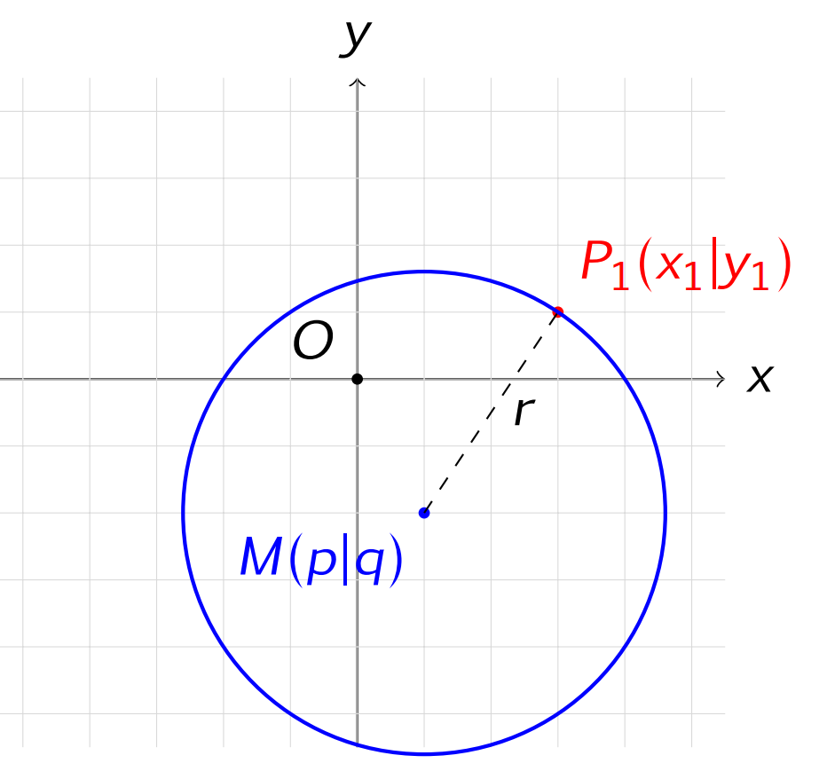

Kreisgleichung in der Ebene \( \mathbb{R}^2 \)¶
Ein Kreis ist die Menge aller Punkte der Ebene, die von einem festen Punkt den gleichen Abstand besitzen.
Dieser feste Punkt heißt Mittelpunkt, der konstante Abstand heißt Radius.

1. Einführung¶
Sei
ein fester Punkt und
ein beliebiger Punkt der Ebene. Ein Kreis entsteht genau dann, wenn für alle Punkte \(P\) gilt:
Mit der Abstandsformel folgt
Durch Quadrieren erhält man die grundlegende Kreisgleichung.
2. Kreisgleichung in Koordinatenform¶
Alle Punkte eines Kreises mit Mittelpunkt \(M(p|q)\) und Radius \(r\) erfüllen die Gleichung
Diese Darstellung heißt Koordinatenform der Kreisgleichung.
Beispiel 1: Kreisgleichung aufstellen¶
Gegeben seien
Dann lautet die Kreisgleichung
3. Kreisgleichung in Vektorform¶
Die Kreisgleichung kann auch vektoriell formuliert werden. Alle Punkte eines Kreises erfüllen
Dabei gilt
Beispiel 2¶
Für
lautet die Kreisgleichung
bzw.
4. Mittelpunkt und Radius ablesen¶
Ist die Kreisgleichung in Koordinatenform gegeben,
so kann unmittelbar abgelesen werden:
- Mittelpunkt \(M(p|q)\)
- Radius \(r\)
Beispiel 3¶
Gegeben sei
Dann gilt